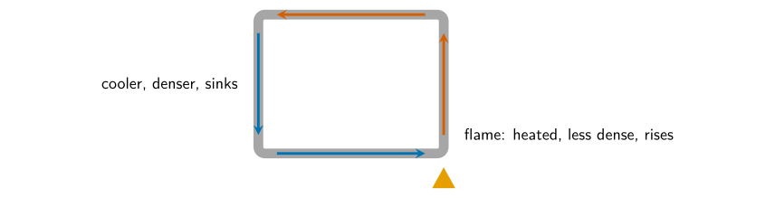
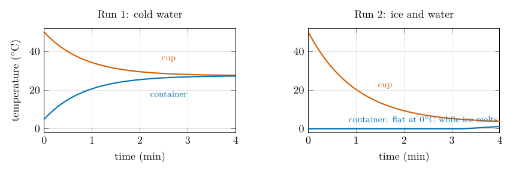

36. Session 1: heat, convection and density¶
Each activity below follows the same pattern: the set-up and steps from the handbook (EGM305 module team n.d.), what to predict, the physics, worked answers to every question the handbook asks, what typically goes wrong, and where the same process works in the atmosphere.
36.1 Activity 1.1A: radiation¶
Set-up and steps
Materials: three cans of the same size, one black, one white and one shiny, each with a thermometer through a hole in its lid; a heat lamp.
-
If the same lamp shines on all three, will the temperatures inside be the same? Why or why not?
-
Record the starting temperatures.
-
Put the cans the same distance from the lamp, switch on and watch the thermometers. What do you see, and how do you explain it? How is heat being transferred?
-
If the lamp stays on for a very long time, will the temperature keep rising? By what mechanisms is heat transferred?
-
How do these principles apply to the absorption of radiation at the Earth’s surface and the regulation of its temperature?
The physics. A surface absorbs the part of the incoming radiation it does not reflect. The fraction reflected is its albedo. A matt black surface absorbs most visible and near-infrared radiation; white paint reflects most visible light but absorbs much of the infrared; polished metal reflects most of everything. The lamp’s filament, near 2800 K, peaks at about 1 \(\mu\mathrm{m}\)(33.3), so much of its output is near infrared.
Answers
1. No: the cans receive the same radiation but absorb different amounts. Predict black warmest, then white, then shiny.\ 3. The black can’s thermometer rises fastest, the shiny can’s slowest. Heat reaches each can by radiation; through the metal wall by conduction; inside, the warmed air circulates by convection and heats the thermometer.\ 4. No. As a can warms it loses heat faster: it emits more radiation (\(\sigma T^4\)), and conducts and convects more heat to the cooler room air. The temperature levels off at the equilibrium temperature where absorbed energy equals lost energy. The black can levels off highest.\ 5. The Earth does the same: dark ocean and forest absorb, snow, ice and cloud reflect, and the planet settles where absorbed sunlight equals emitted infrared (Chapter 17). Melting ice exposes darker ground or sea, which absorbs more and warms further: the ice–albedo feedback.

Figure 36.1. The expected shape of the three warming curves (illustrative numbers): each rises quickly at first, then levels off at its equilibrium temperature, highest for the black can.
What goes wrong
Cans at different distances from the lamp (the intensity falls with the square of the distance, so 10 % further means about 20 % less radiation); one can shading another; reading the thermometers from different angles. Keep the lamp at least 30 cm away and do not touch the hot cans.
36.2 Activity 1.1B: conduction¶
Set-up and steps
Materials: wood, metal and cloth, all at room temperature for some time.
-
Without touching them, predict their temperatures. Will they feel the same?
-
Touch each briefly. Does it match your expectation? Explain, given that all are at room temperature.
-
What does this reveal about how the nervous system senses temperature?
-
When and where does conduction matter in the atmosphere?
Answers
1. All three are at room temperature (say 21\(^{\circ}\mathrm{C}\)) because they have exchanged heat with the room for hours.\ 2. Yet the metal feels cold, the wood cool and the cloth warm. Your skin (about 33\(^{\circ}\mathrm{C}\)) is warmer than all three and loses heat to whatever it touches. Metal has a high thermal conductivity, so it carries heat away from your fingers quickly; wood and cloth conduct poorly, and cloth traps air, an excellent insulator.\ 3. Skin senses the rate of heat flow, not temperature. “Cold” means “heat leaving me fast”. Thermometers, not hands, measure temperature.\ 4. Air is a poor conductor, so conduction matters only in the few millimetres next to a surface: a sunny road heats the air touching it; on a clear night the ground, cooled by radiation, chills the lowest air until fog or frost forms. Above that thin layer, convection and turbulence move the heat.
36.3 Activity 1.1C: convection¶
Set-up and steps
Materials: the convection apparatus (a rectangular loop of glass tube), food colouring in two colours, a pipette, a spirit lamp, matches.
-
Sketch the set-up.
-
Fill it with water, with no bubbles in the horizontal tubes.
-
If the right column is warmed and the left cooled, which way will water flow through the horizontal tubes?
-
Put the spirit lamp under the right column; wait a minute or two; add a few drops of dye at the top. Does the flow agree with your prediction?
-
Move the lamp to the left side, wait a few minutes, and add the other colour.
-
What atmospheric processes does this demonstrate?
Answers
3. Water warmed on the right expands and becomes less dense (998 kg m\(^{-3}\) at 20\(^{\circ}\mathrm{C}\), 988 at 50\(^{\circ}\mathrm{C}\)), so it rises; the cooler, denser water on the left sinks. So the flow runs up the right column, right to left along the top tube, down the left column and left to right along the bottom tube.\ 4. The dye is carried round the loop in that direction, slowly at first, faster as the temperature difference grows.\ 5. With the lamp on the left the loop slows, stops and reverses: the dye of the second colour circulates the other way.\ 6. A temperature difference makes a density difference, which drives a circulation: sea and land breezes, thunderstorm updrafts, the Hadley cell rising over the hot equator and sinking near 30\(^{\circ}\), and the ocean’s overturning circulation.

Figure 36.2. The circulation in the convection loop with the lamp under the right column. Moving the lamp to the left reverses every arrow.
36.4 Activity 1.2: heat flow and latent heat¶
Set-up and steps
Materials: a small plastic container with a lid (a hole for a thermometer) that fits inside nested polystyrene cups, marked so that the cup holds the same volume of water as the container; two digital thermometers; hot tap water, ice-cold water and ice.
-
Draw the set-up with arrows for the direction of heat flow if the container holds ice-cold water (no ice) and the cup hot water. What happens to each temperature?
-
Fill the container with ice-cold water; record its temperature; clamp it.
-
Fill the cup with hot water to the line; record its temperature.
-
Put the container in the cup. Record both temperatures every 30 s for 4 minutes, stirring gently.
-
Plot both against time. Does it agree with your prediction? What will the temperature difference be after a longer time?
-
Predict the result with 60 % ice and 40 % water in the container.
-
Fill the container that way; record its temperature.
-
Repeat steps 4 and 5. Do you see the same trend? Why or why not?
The physics. Heat flows from the hot water to the cold until their temperatures meet. With no losses, heat lost = heat gained (33.1):
which for equal masses is simply the average. The rate of heat flow is proportional to the temperature difference, so the two curves close in quickly at first and then ever more slowly (exponentially).
Run 1: cold water in hot water, 100 g each
$T_h = 50
^{\circ}\mathrm{C}$: $T_f = (50 + 5)/2 = 27.5
$$ ^{\circ}\mathrm{C}$. Measured values usually end a degree or two lower, because the cup also loses heat to the room.
Run 2: ice and water in hot water
Container: 60 g ice and 40 g water at 0\(^{\circ}\mathrm{C}\). Cup: 100 g water at 50\(^{\circ}\mathrm{C}\).\ Heat the cup can give while cooling to 0\(^{\circ}\mathrm{C}\): \(100 \times 4.186 \times 50 = 20\,930\) J.\ Heat needed to melt all the ice (33.4): \(60 \times 334 = 20\,040\) J.\ So almost all of the cup’s heat goes into melting. The container stays at 0\(^{\circ}\mathrm{C}\)while ice remains; once it is all melted, the remaining \(20\,930 - 20\,040 = 890\) J warms all 200 g by $890/(200 \times 4.186) = 1.1 $$
^{\circ}\mathrm{C}\(. Final temperature about 1\)^{\circ}\mathrm{C}\(, against 27.5\)^{\circ}\mathrm{C}$in Run 1.

Figure 36.3. Expected curves (illustrative). Left: the two temperatures converge on the average. Right: the melting ice holds the container at 0\(^{\circ}\mathrm{C}\), so the cup keeps cooling towards it and ends far colder than in Run 1.
Answers
1, 5. Heat flows from the cup into the container; the container warms and the cup cools until they meet near the average. After a long time the difference is zero, and both then cool slowly together to room temperature.\ 6, 8. No, not the same trend: the container’s temperature stays flat at 0\(^{\circ}\mathrm{C}\)as long as there is ice, because the heat coming in melts ice (latent heat) instead of raising the temperature; the cup cools much further. This is why sea ice holds polar surface waters near freezing all summer, and why ice keeps a drink cold until it is gone.
What goes wrong
Unequal volumes (use the line on the cup); not stirring, so warm water floats on top and the thermometer misreads; letting the hot water stand while you set up, so it starts cooler than recorded. Plot both runs on the same axes to compare them.
36.5 Activity 1.3A: horizontal density differences¶
Set-up and steps
Materials: a rectangular tank with a removable divider, a bottle of salt solution, food colouring in two colours, ice, beakers, scales.
-
Fill a beaker with tap water.
-
Put tap water in one half of the tank and salt solution in the other, each with its own colour. Predict what happens when the divider is removed, and why.
-
Measure the densities of the tap water and the salt solution.
-
Remove the divider. What happens? Does it agree with your densities?
-
Empty the tank. Fill one beaker with hot tap water and one with ice-cold water, each coloured.
-
Put them in the two halves and repeat steps 3 to 5. After the divider is removed and the tank settles, put your fingertips on the surface and move slowly down. Can you feel the temperature change?
-
How might warming and melting sea ice change the vertical structure of the ocean?
Typical densities, measured as in Chapter [32](p4-ch02_density.md#p4-ch:density)
Tap water at 20\(^{\circ}\mathrm{C}\): 99.8 g in 100 mL, 0.998 g cm\(^{-3}\). Salt solution: 102.5 g in 100 mL, 1.025 g cm\(^{-3}\). Hot water at 50\(^{\circ}\mathrm{C}\): 0.988; ice-cold water at 2\(^{\circ}\mathrm{C}\): 1.000 g cm\(^{-3}\).\ The density difference in the hot–cold tank, \(1.000 - 0.988 = 0.012\) g cm\(^{-3}\), is less than half the salt–fresh difference (0.027): the hot–cold layering forms more gently, and mixes away as the temperatures even out.
Answers
2, 4. The denser salt water slides along the bottom under the fresh water as a wedge-shaped gravity current, and the fresh water spreads over the top in the opposite direction. The tank settles into two layers, the coloured salt water below.\ 6. The same happens with cold water (denser) below and hot water above. Moving your fingertips down you feel a fairly sharp change from warm to cold at the interface (the thermocline of the tank).\ 7. Warming makes surface water lighter, and melting ice adds fresh water, lighter still: both strengthen stratification. A more stratified ocean mixes less: less heat and oxygen reach the deep water, fewer nutrients reach the surface, and the deep overturning can weaken.
In the atmosphere
A cold front is the tank in the open air: dense cold air undercuts warm air like the salt water, lifting it into cloud. At a warm front the lighter warm air rides up over the cold. Sea breezes and the cold winds that drain down valleys at night (katabatic winds) are density currents too. (Salinity layers water only; in air the density differences come from temperature and humidity.)
36.6 Activity 1.3B: the teabag rocket¶
Steps
Cut the stapled top off a teabag, tip out the tea, open the bag into a cylinder, stand it on a non-flammable surface and light the top. Watch how it responds. What forces are responsible? Draw a diagram.
Answer
The flame heats the air inside and above the cylinder to a few hundred degrees. That air is far less dense than the room air (about 0.6 against 1.2 kg m\(^{-3}\), § 33.3), so it rises as a buoyant plume, and room air is drawn in at the base to replace it. As the paper burns down, the remaining ash ring weighs only a few milligrams. When the upward drag of the rising hot air exceeds the ring’s weight, it lifts off and floats up.\ Diagram: on the ash ring, weight \(mg\) pointing down, and an upward force from the rising plume (drag) larger than it; around the ring, arrows of air flowing in at the bottom and up through the middle.
In the atmosphere
Thermals that gliders and birds ride, cumulus clouds that grow over heated ground, smoke and ash lofted by wildfires (pyrocumulus), and the rising branch of every convective circulation.
Take care
Light the teabag only on the mat, away from paper and hair; let the ash cool before clearing it.